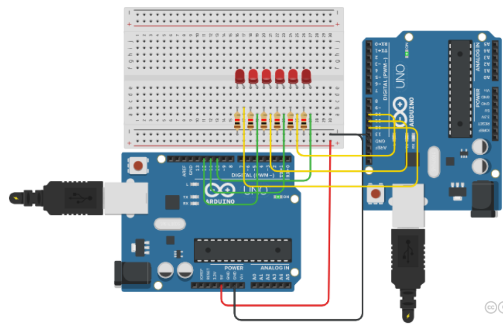

Curso de Ciência da computação - Laboratório de iniciação à programação
Laboratório de iniciação à programação
Nesta matéria como o nome ja diz, tivemos o nosso primeiro contato com programação nas ferramentas Scratch e Tinkercad. Entendemos como a programação em seu geral é estruturado através de programação em blocos, e tivemos o prazer de entender e montar nossos primeiros circuitos eletrônicos. Também, como uma forma de preparar a nossa capacidade profissional, tivemos o contato com a plataforma Lattes, onde criamos o nosso currículo adicionando nossos conhecimentos e capacidades técnicas para o mercado de tecnologia.
Scratch: O Scratch é uma linguagem de programação criada pelo grupo Lifelong Kindergarten da universidade americana MIT. Tem como objetivo ensinar a lógica da programação para crianças e adolescentes. Com ele, é possível criar histórias, jogos e animações com scripts feitos com blocos. É um tipo de programação “visual”, mais simplificada. Isso permite que qualquer um, mesmo sem saber nada sobre programação, consiga criar projetos digitais com mais facilidade.

Tinkercad: O Tinkercad é uma ferramenta online gratuita de criação e design de modelos 3D, permitindo que usuários desenvolvam o seu próprio projeto de forma fácil. E não é a toa que o slogan do Tinkercad é: “da mente ao projeto em minutos”… É possível projetar peças das mais variadas geometrias de uma forma super intuitiva e acessível, apenas criando uma conta no site gratuitamente.

Plataforma Lattes: A Plataforma Lattes é um sistema de currículos virtual criado e mantido pelo Conselho Nacional de Desenvolvimento Científico e Tecnológico, pelo qual integra as bases de dados curriculares, grupos de pesquisa e instituições em um único sistema de informações, das áreas de Ciência e Tecnologia, atuando no Brasil.

Produtos realizados
Por ser uma matéria muito prática, desenvolvemos diversos produtos com objetivo de compartilhar nosso conhecimento mas com foco principal em melhorar nossa técnica.
- Projeto individual inicial do Arduino: Neste projeto, conectei Dois Arduinos interligados, um programado com blocos e o outro programado com linguagem alfanumérica. 
- Multiplayer game equipe - jogo
- Roteiro início aprendizado programação do Arduino Tinkercad: Neste projeto montei um roteiro de aprendizado ensinando passo a passo como usar o Tinkercad
- Vídeos do roteiro início aprendizado programação do Arduino Tinkercad: Víde onde tive que divulgar o roteiro realizado